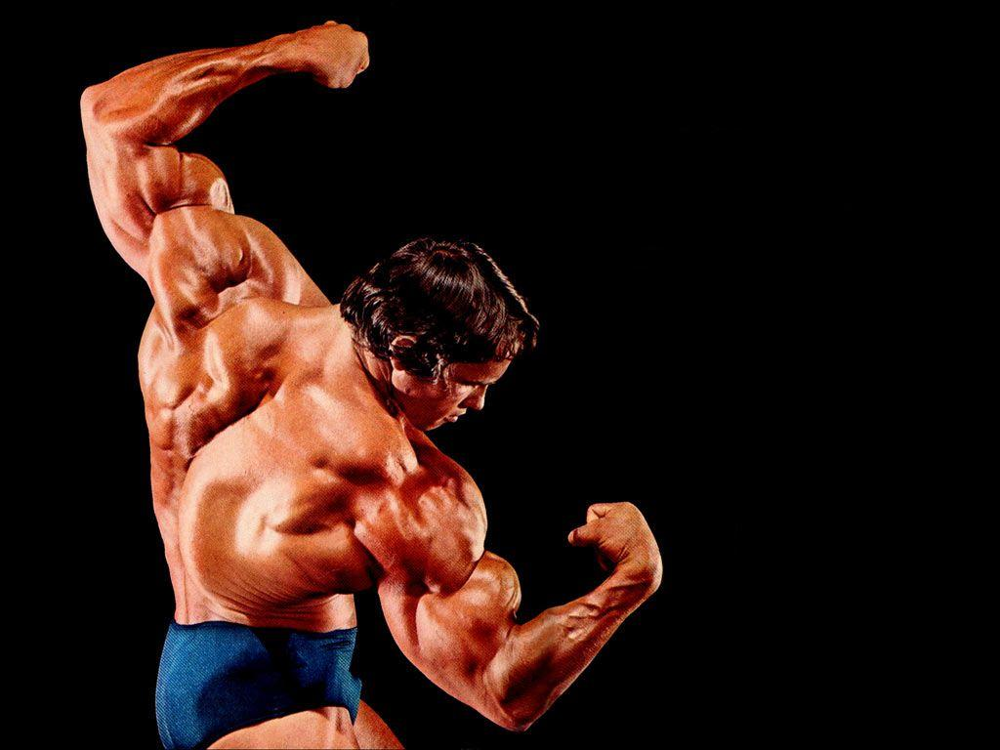

Photographies
Photo 1

Арно́льд Ало́ис Шварцене́ггер (нем. Arnold Alois Schwarzenegger [ˈaɐ̯nɔlt ˈaloʏs ˈʃvaɐ̯tsn̩ˌʔɛɡɐ] Информация о файле слушать, англ. [ˈʃvɑːrtsnɛɡər] или [ˈʃwɔːrtsnɛɡər]; род. 30 июля 1947, община Таль, близ города Грац, Штирия, Австрия) — американский культурист, предприниматель, киноактёр, продюсер, государственный и политический деятель австрийского происхождения. 38-й губернатор Калифорнии (был избран на эту должность в октябре 2003 года и переизбран на второй срок в 2006 году).
Photo 2

В кинематографе наиболее известен по роли Терминатора Т-800 в серии «Терминатор» (1984—2019). Также за свою актёрскую карьеру исполнил главные роли во множестве других фильмов, в том числе «Геркулес в Нью-Йорке» (1970), «Оставайся голодным» (1976), «Качая железо» (1977), «Конан-варвар» (1982), «Конан-разрушитель» (1984), «Рыжая Соня» (1985), «Коммандо» (1985), «Без компромиссов» (1986), «Хищник» (1987), «Бегущий человек» (1987), «Красная жара» (1988), «Близнецы» (1988), «Вспомнить всё» (1990), «Детсадовский полицейский» (1990), «Последний киногерой» (1993), «Правдивая ложь» (1994), «Джуниор» (1994), «Стиратель» (1996), «Подарок на Рождество» (1996), «Бэтмен и Робин» (1997), «Возвращение героя» (2013) и других. Имеет ряд премий в кинематографе.
Photo 3

Родителями Арнольда были Густав Шварценеггер (1907—1972) и Аурелия Шварценеггер, урождённая Ядрни (1922—1998), проживавшие в торговой общине Таль вблизи города Грац, столицы земли Штирия. Они поженились 20 октября 1945 года, когда Густаву было 38 лет, а Аурелии 23. Семья была католического вероисповедания и каждое воскресенье посещала церковь. Их старший сын Мейнхард Шварценеггер родился 17 июля 1946 года. 30 июля 1947 года родился младший сын, который был крещён как Арнольд Алоис Шварценеггер[2]. Фамилия Шварценеггер происходит от названия швейцарской деревни Шварценегг, входящей в состав коммуны Унтерлангенегг.
Photo 4

После аншлюса Австрии в 1938 году Густав Шварценеггер вступил в НСДАП и СА. Во время войны он служил в фельджандармерии, где получил чин гауптфельдфебеля (старшего сержанта), в частности, он участвовал в военной операции по блокаде Ленинграда, где был ранен.
Photo 5

После денацификации Густаву было разрешено работать шефом местной полиции, так как не было найдено доказательств совершения им каких-либо военных преступлений. Семья жила бедно; одним из самых ярких воспоминаний молодости Шварценеггер называет покупку холодильника.
Photo 6

У Арнольда сложились непростые отношения с семьёй, поскольку для австрийских родителей подчинение общепринятым правилам было важнее, чем личность ребёнка. Протестующий юный Арнольд Шварценеггер всегда хотел стать богатым и знаменитым[3].